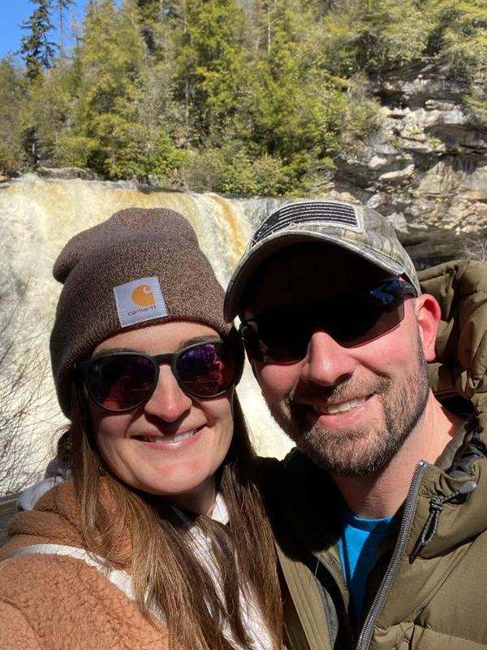
There's a lot more to Happy Valley than game day. This is the list I'd hand a friend staying at the house: trails from easy strolls to ridge-busters, trout water and big lakes, elk, festivals, the breweries we actually go to, and the iron-country history that came before Penn State. Hours and seasons change, so check the links before you go.
— Joe & Liz, your hosts
Start here. You can be on a trail in the time it takes to find parking downtown.
A 149-acre township preserve of forest, vernal pools, and pitch pine–scrub oak barrens, with a relatively flat trail from the Gray's Woods Park lot at 1500 Gray's Woods Blvd. It connects into State Game Lands 176, the Scotia Barrens: miles of sandy trails, old iron-mining ruins, and some of the best birding in the county.
A family orchard on Halfmoon Valley Road dating to 1872, close to the house. Farm store and bakery year-round; in the fall, weekend festivals with wagon rides to the pumpkin patch, apple picking, craft shows, and food trucks.
A 62-acre wetland and old farmstead with a boardwalk through the marsh, walking trails, a restored bank barn, and native gardens. Great with kids and for birds. Parts of the boardwalk have been closed for repairs in recent years, so expect a detour or two.
Botanic gardens, a children's garden, and a pollinator and bird garden on the edge of campus, with woods and meadows beyond. Open dawn to dusk, free admission. In December the gardens light up for the holidays.
A boardwalk through a high-elevation bog that doesn't look like anywhere else around here, in a park with a 250-acre lake. Summer canoe, kayak, and paddleboard rentals.
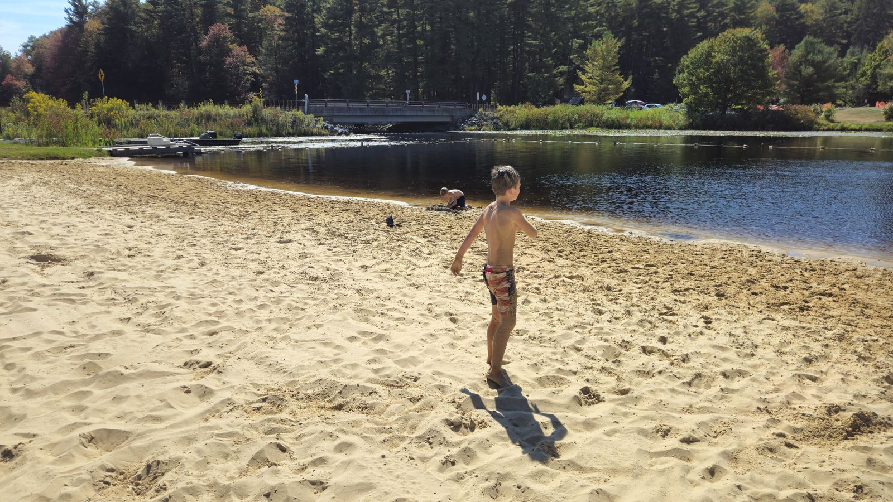
A flat old railbed along Penns Creek that runs through a 250-foot railroad tunnel under Paddy Mountain. Poe Paddy sits on the site of an 1880s lumber town. The forest roads out there aren't plowed in winter.
The one everybody does. It's 0.6 miles of steep, rocky climbing from the Lemont trailhead to the Mike Lynch Overlook, which looks straight down on campus, Beaver Stadium, and the Bryce Jordan Center. Keep going on the Blue Trail for more overlooks and 8-plus miles of trail. Foot traffic only, no bikes.
About 10 minutes from downtown. A 2.3-mile loop up Roaring Run through a rocky stream valley. This is also the heart of the local mountain biking, so watch for riders. Dogs welcome on a leash.
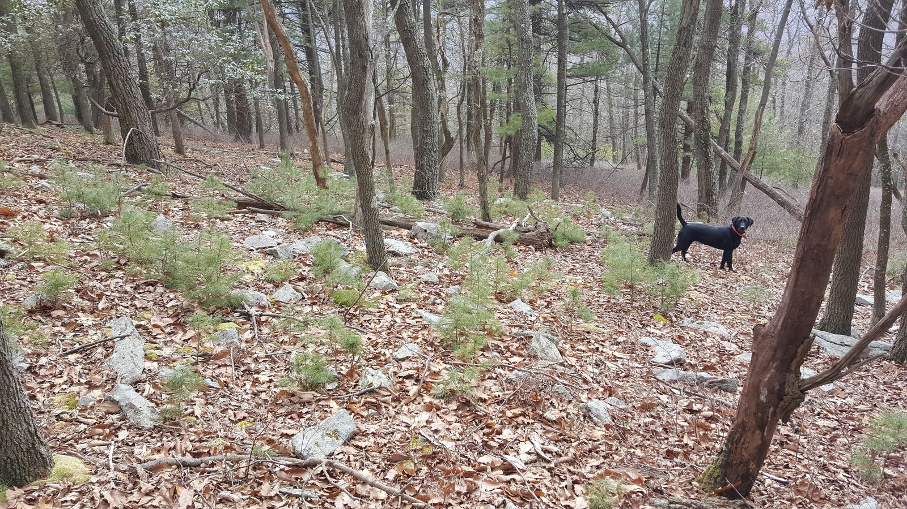
An easy 2.3-mile loop around the lake, about 12 miles south of town off Route 26. Pair it with a swim in summer.
Up the Lower Trail, along Bald Knob Ridge, and back down Sand Spring Trail. Long climbs, rocky footing, and views off the top of Tussey Mountain.
The Mid State Trail, a 326-mile trail from Maryland to New York, runs about 42 miles through Rothrock. Its rocky ridgeline section leads to Indian Wells Overlook above Bear Meadows. It's some of the roughest trail in Pennsylvania, so be honest about your knees.
Head east over the Seven Mountains toward Poe Valley State Park and Poe Paddy. This is the heart of Bald Eagle State Forest, with Poe Lake and its beach at Poe Valley, the Penns Creek wild area below, and steep trails up Big and Little Poe Mountains that tie into the Mid State Trail. The forest has more than 300 miles of trail in all. Bring a map, because cell service is spotty and the forest roads aren't plowed in winter.
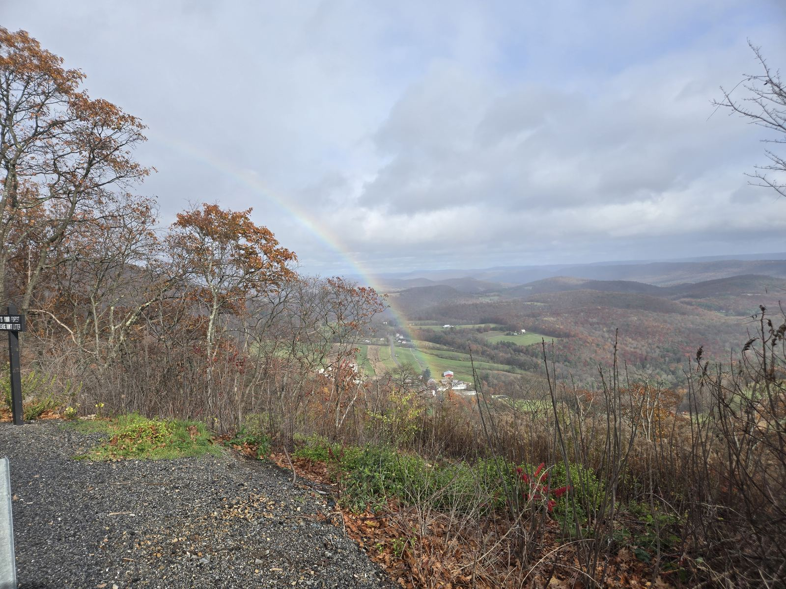
Fly rod, spinning rod, or a boat on a trailer, it's all close. There's room to park your boat and trailer at the house. Everyone 16 and up needs a Pennsylvania fishing license, plus a trout permit for trout.
A limestone spring creek with wild brown trout, between State College and Bellefonte. Fisherman's Paradise is the famous catch-and-release, fly-fishing-only stretch. In downtown Bellefonte you can watch trout from Talleyrand Park; the section in the park itself is closed to fishing. Bellefonte has fly shops and guides who know what's hatching.
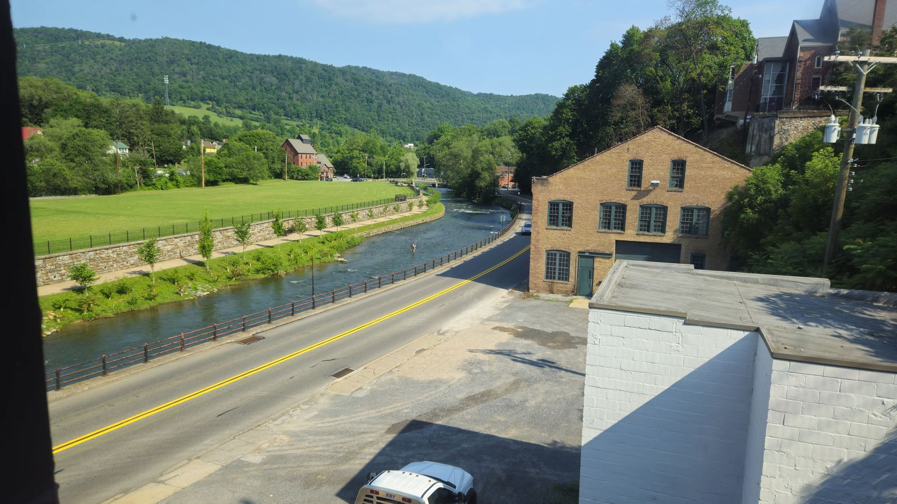
A big, famous trout stream through Bald Eagle State Forest, best known for its green drake hatch in late spring. Poe Paddy is the classic access point.
A 1,730-acre lake in a 5,900-acre park, with a marina and launches, open to motorboats of any horsepower. Bass, walleye, and panfish, and ice fishing in a cold winter. The closest big water to the house.
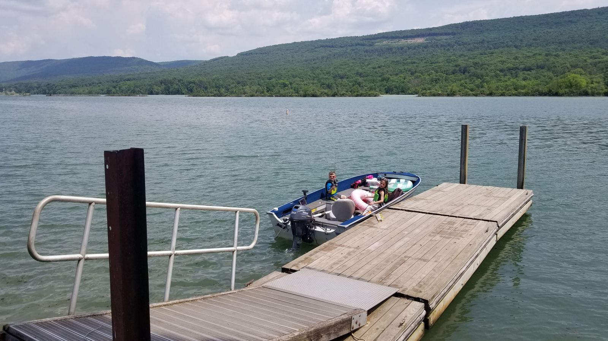
The largest lake entirely inside Pennsylvania: 8,300 acres, up to 200 feet deep, with several public boat launches. It's the striped bass lake in the Northeast, and the state record striper of over 53 pounds came out of here. Muskie, walleye, lake trout, and bass too.
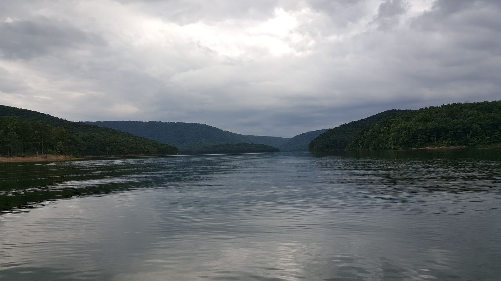
A 22-acre lake stocked with trout, open to kayaks, canoes, and electric motors. Swimming beach in summer. Good with kids.
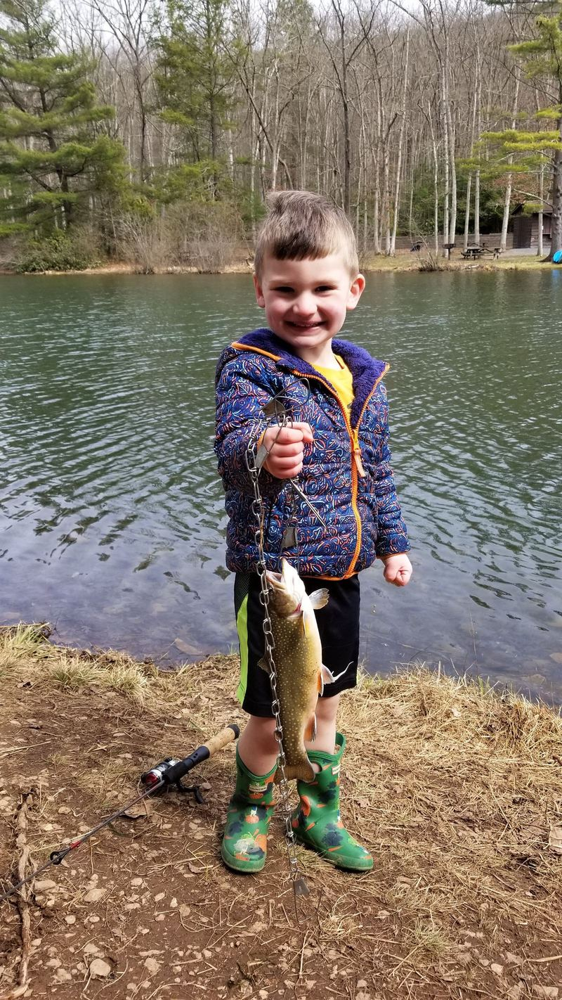
A 77-acre lake run by the Fish and Boat Commission, east of Boalsburg. Unpowered boats and electric motors only, at slow no-wake speed, with two launch ramps. Good bass water and an easy morning in a kayak.
Penn State's 72-acre lake in Stone Valley, with fishing, boat rentals (canoes, kayaks, SUPs, rowboats), and over 20 miles of trails, including the 2.9-mile Lake Trail loop around Lake Perez. Private boats need a Stone Valley launch permit from the office.
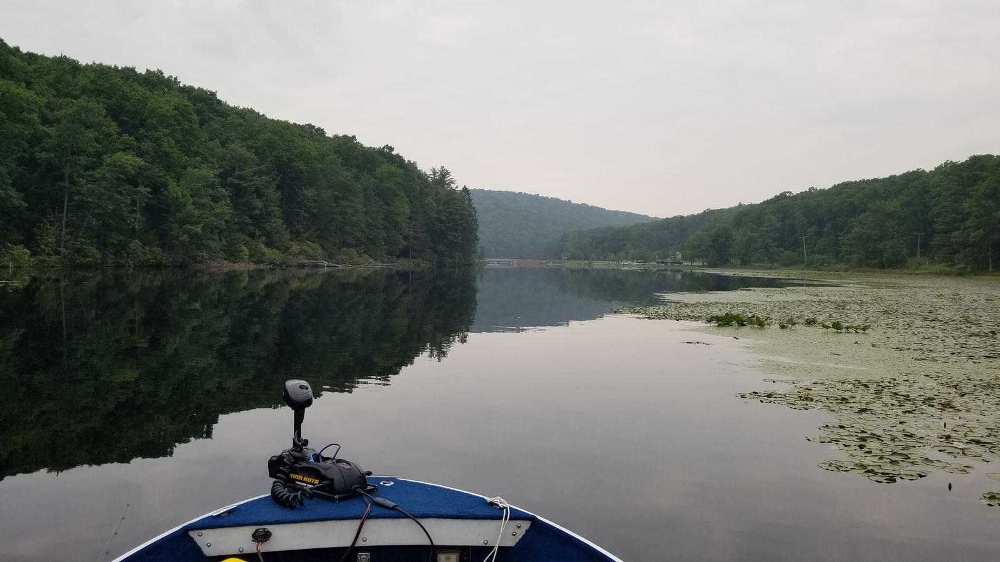
Pennsylvania's elk range reaches closer to State College than most people realize. There's a findable group of wild elk about half an hour from the house. We don't post spots online, to keep pressure off the animals, so ask Joe during your stay and he'll point you in the right direction. Glass from the road, keep your distance, and stay off private land.
Pennsylvania has a wild elk herd of more than 1,000 animals, centered on the little town of Benezette in the PA Wilds. The visitor center is run by the Keystone Elk Country Alliance, and the viewing areas around it are the most dependable places to see elk. The rut in September and October is the show, with bulls bugling and clashing, but it gets crowded. Go early morning or near dusk, stay off private land, and give the animals room. It's a long day trip, so pack lunch.
Plan an Elk Country trip with the PA Wilds →
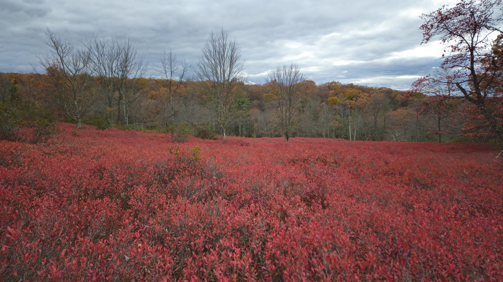
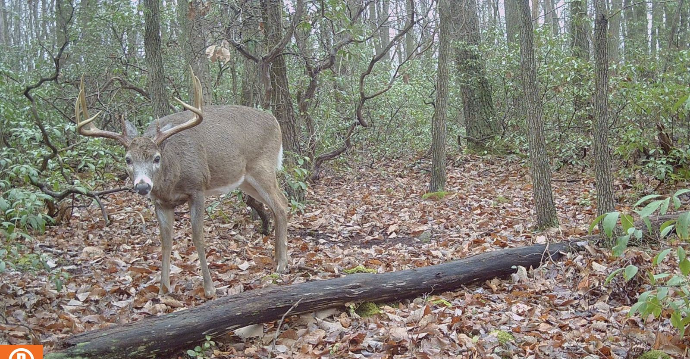
My favorite restaurant in the area right now. It's a drive, and it's totally worth it. The inn dates to 1827, out past Bald Eagle State Park through farm country, with a dining room and bar, a patio with live music in summer, and a monthly chef's dinner. There's a B&B upstairs too.
A neighborhood trattoria with wood-fired pizza, homemade pasta, and a good wine list. A State College institution. Small lot and no reservations, so takeout is a solid move.
On the historic Boal Mansion property at the foot of Rothrock. A big lawn and beer garden, fire pits, rotating food trucks, and a brewer who keeps the taps moving.
A family-run cidery on J.L. Farm near the Shingletown Gap trailhead. Six ciders on tap, food trucks, live music, and fire pits in the orchard. Their White Out cider is poured in Beaver Stadium. Best in the fall.
A production brewery and taproom in a restored metal factory off Axemann Road, with food, games, pinball, and a packed event calendar. Good with a group.
One of Pennsylvania's oldest craft breweries, with a full food menu. An easy dinner after a day out.
A craft distillery with its tasting room in Bellefonte's old Match Factory, looking out on Talleyrand Park, plus a downtown State College bar. Go for a cocktail.
Farm-to-table food, house beer, and live music in Penns Valley. Pair it with a drive through farm country.
Our local pizza shop in Stormstown. Easy takeout for the first night in.
A sixth-generation family farm on Halfmoon Valley Road. The farm store has a bakery, fresh cider, cider donuts, and local produce, meats, and cheeses. There's also a downtown market and café on Calder Way in State College.
A 10-barrel brewhouse on the old Meadowbrook Farm in Lewistown, with a dozen-plus beers on tap, a big outdoor space with a stage, and a real kitchen (bar food plus ramen and bao). Easy to combine with a drive through the Seven Mountains.
A Williamsport brewery built around getting outside, founded in 2018. They brew State Light, the lager poured in Beaver Stadium, and The Wilds Are Calling IPA for the PA Wilds. Pair it with a trip into the Wilds.
Penn State's own ice cream, made on campus. Expect a line on game weekends.
A family farm since 1922, scooping its own homemade ice cream, made with milk from the farm's cows, since 2020. Bring a lawn chair and hang out on the farm. Seasonal, closed in winter. In October their Fall Fest weekends add a corn maze, hayrides to the pumpkin patch, and farm animals.
The locals' other answer to "Creamery or Meyer's?" A generations-old dairy farm store with picnic tables out front.
Dates move a little each year. These are the usual windows; check the links before you book.
Penn State's 46-hour student dance marathon for pediatric cancer, at the Bryce Jordan Center over a weekend in February. The whole town shows up.
State College's Independence Day: the Firecracker 4K in the morning, a parade downtown, a festival at the ballpark, and a fireworks show that's been ranked among the biggest and best in the country, launched from the northeast corner of campus.
A top-ranked juried art fair across downtown State College and campus: art, music, food, and a sidewalk sale. One of the biggest non-football alumni weekends of the year.
A four-day Pennsylvania arts and crafts festival that's back home on the Pennsylvania Military Museum grounds in Boalsburg. Running at the same time as Arts Fest makes for one big festival week.
Nine days of livestock shows, fair food, rides, and concerts at the last remaining tenting fair in the country. Summer's last hurrah.
The Howard Fire Company launches pumpkins into the lake at Bald Eagle State Park with air cannons and homemade machines. Food, craft vendors, hayrides, and a pie-eating contest. Free; donations go to the fire company.
Weekend festivals from late September through October, with pumpkins, apples, wagon rides, craft shows, and food trucks. Close to the house.
Seven minutes from the house. Spring brings the Blue-White Game for a preview.
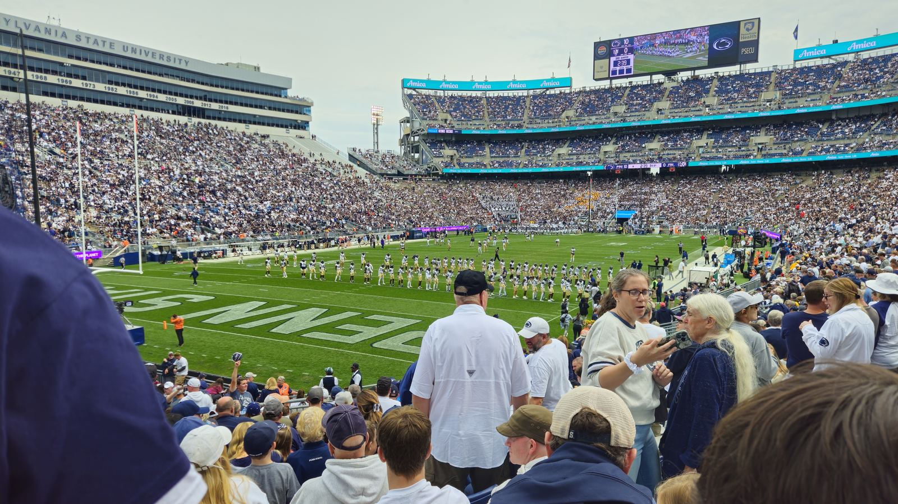
A full weekend in historic Bellefonte with horse-drawn carriage rides, gingerbread house contests, Victorian teas, concerts, and an arts and crafts show.
The Arboretum's gardens are lit up through the holidays. Free.
Centre County was iron country before it was a college town. Penn State was founded on land from an iron plantation. Here's where to see it.
The ironmaster's house of Centre Furnace, the county's first charcoal iron furnace (1791) and the "birthplace of Penn State." Home of the Centre County Historical Society, with a furnished mansion, the old furnace stack, and period gardens, about a mile downhill from Beaver Stadium. Free docent tours on set afternoons.
One of the longest-running ironworks in Pennsylvania, operating from 1810 to 1921. See the ironmaster's 1830s stone mansion, the furnace, and the workers' village. The Curtin family produced Andrew Curtin, Pennsylvania's Civil War governor. Grounds open dawn to dusk; guided tours on weekends in season.
Eight generations of one family's home, plus a chapel that belonged to Christopher Columbus's family, brought from Spain in 1909 with the largest collection of Columbus artifacts in North America. Strange and wonderful. Boal City Brewing is on the same property.
Pennsylvania's military history from the colonial era to today, with a focus on the 20th century and tanks on the grounds. Right across from the Boal Mansion.
Streets full of Victorian architecture around Talleyrand Park and the Big Spring. The old Pennsylvania Match Company factory (1899) was once one of the country's biggest match makers and now houses a distillery and the American Philatelic Society.
Centre County is part of a 15-county state heritage area that tells the story of Pennsylvania's logging boom, from the cut-over hills to the state forests that grew back. Their site has trails, museums, and driving routes.
An 18-hole, par-71 course in Boalsburg, the former State College Elks club, open to the public. Good greens and mountain views. Book weekend tee times early.
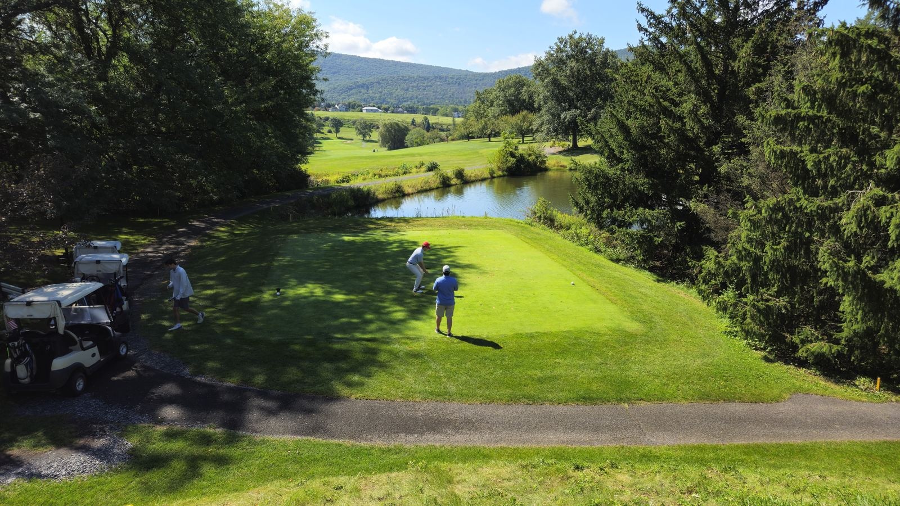
A small ski hill a few miles from campus, with night skiing, a terrain park, lessons, and rentals. Snow tubing was dropped last season, so check what's running.
An all-water limestone cavern you tour by boat, open since 1885, plus a wildlife tour. Hours shrink in winter and it has closed for January and February in past years.
For everything else going on:
Five private acres, a fire pit, room for the boat, and a full kitchen to come back to. Seven minutes from Beaver Stadium.